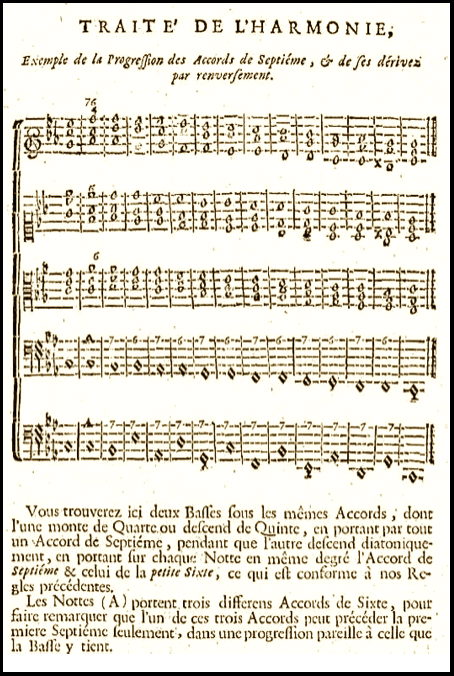
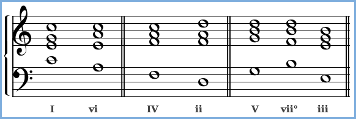

-

Chapter 9
Chord Progression
The tonic and the dominant scale degrees have a very close relationship. Whether
their affinity for each other is based on acoustic principles or on cultural traditions, or on both, is hard to say – but there is a certain magnetism between them. It’s this “magnetism” that gives a chord change
from dominant to tonic a unique sense
of logical resolution.
Jean-Phillipe Rameau was one of the first theorists to consider chord roots in the modern sense. At right he describes what
today we would call a chain-of-fifths progression (Treatise on Harmony, 1722). -
127
Section 1
Chord Changes with the Primary Triads
The energy possessed by the dominant-to-tonic chord change is at the heart of the technique that composers of tonal music use to propel a composition through a progression of harmonies. The technique rests both on the importance of the dominant-tonic relationship itself and on the capacity of other chord pairs to mimic that relationship. What makes it work?
• Root movement by an upward fourth or downward fifth: The first thing we notice is that the root of the tonic chord is a fourth above the root of the dominant. Or, if we move in the opposite direction, it’s a fifth below.
• The presence of a leading tone: Next we see that the dominant chord is major (remember that even in a minor key we often go to the trouble of altering the dominant to major). That produces a half-step “leading tone” that can move very strongly to the tonic.
Those two characteristics, root progression of an upward fourth or downward fifth and the presence of a leading tone, define the dominant-tonic relationship. But there are other chord changes that have one or both of these features, and which consequently have some of that same energy found in the dominant-tonic pair.
Movie 9.1 Root movement by an upward
fourth or downward fifthMovie 9.2 The tonic-subdominant pair share the same characteristics as the dominant-tonic pair.
-
128
The most important of these other chord changes is that from the tonic to the subdominant (i.e., from the tonic triad to the triad built on the fourth note of a major or minor scale). This is because the tonic chord’s position relative to the subdominant is the
same as that of the dominant to the tonic – the only difference is that the movement is away from the tonic rather than toward it.The I, IV, and V chords, then, share a unique and symmetrical relationship. These three, which we earlier called the primary triads, are the main connecting points of a chord progression Chord Progression A series of harmonic changes or chords, either within a key or changing from one key to another. The strongest type of chord movement is that in which the roots of the two chords are separated by a fourth or fifth, as they are in the tonic-dominant pair — especially a rising fourth or descending fifth. The primary triads, the tonic, dominant, and subdominant chords, share a unique and symmetrical relationship, wherein the tonic has the same relationship to the subdominant as the dominant has to the tonic. These three are the most important chords in a standard progression.
Popular music, such as the twelve-bar blues progression, is often built exclusively on the I, IV and V chords. – the big cities, so to speak, on your harmonic highway.For much of popular music and even many well-known classical themes these are the only chords you need to know. The power of
the cycle between I, IV, and V is well illustrated in the standard twelve-bar blues progression, which works exactly the same way
in hundreds of compositions.Movie 9.3 A typical blues progression uses only the primary triads
-
129
Adding a new dominant after “I won’t be back at all” would take us back to the beginning of the cycle, which can repeat indefinitely. Having the chord cycle remain constant allows the musicians to add melody and accompaniment without losing even inexperienced listeners.
The blues progression illustrates the tension between predictability and surprise that is at the heart of effective musical structures. The conventions of the progression provide a framework for innovation, and also establish a model of predictable behavior that can be altered from time to time with great effect. Perhaps the most important of these conventions in tonal music is the journey from the tonic to the dominant and back again. Compare the blues progression to the beginning of this Mozart Piano sonata:
Mozart’s piece is certainly different in style from the blues, but is still based on the same logical interplay between the three strongest chords: tonic, subdominant, and dominant. Harmonically, the two examples have much in common, at least in the first
few measures.Movie 9.4 I, IV and V in Mozart’s Piano Sonata K. 545
Suggested Practica Musica Activities 9.1
• Analyzing Primary Chords: Identify primary chords by roman numeral.
• Hearing Primary Chords: Identify primary chords by ear.
-
130
Harmonic Rhythm
You may have noticed that the chords in both the previous examples change much less frequently than the notes do. This is true of most tonal music based on accompanied melody: we say that it tends to have slow harmonic rhythm. In most pieces, the underlying chord – the one that “goes with” the melody – will change only once a measure or at the most, twice, unless the
piece is very slow.J.S. Bach’s famous chorales, short vocal works for four voices,
are often studied for their harmony. The chorales could be said to have a fast harmonic rhythm, since they change chords on almost every beat:
Movie 9.5 J.S. Bach: Herzlich lieb hab ich dich, O Herr
Review 9.1
1. A series of harmonies is called a chord progression.
The powerful relationship between the dominant
and the tonic chords is at the heart of all tonal chord progressions. The strongest type of chord movement is that in which the roots of the two chords are separated by a fourth or fifth, as they are in the tonic-dominant pair – especially a rising fourth or descending fifth.2. The primary triads are the tonic, dominant, and subdominant chords. These share a unique and symmetrical relationship in which the tonic has
the same relationship to the subdominant as the dominant has to the tonic. These three are the most important chords in a standard progression. Popular music, such as the twelve-bar blues progression, is often built exclusively on the I, IV and V chords.3. Chords usually change at a relatively slow pace.
Most often they change no more than twice in a measure; occasionally they will not change at all for several measures. The speed of the chord changes is called the harmonic rhythm. -
131
Section 2
Extending the Dominant-Tonic Relationship
Root Progression By Ascending Fourth
The idea that chords follow each other well if their roots are a fourth or a fifth apart can be extended to the secondary triads.
None of these changes has quite the strength of V-I or even I-IV, since they all begin with minor chords and therefore have no leading tone, but they still have a trace of that dominant-tonic relationship. For example, ii moves very nicely to V, iii to vi, and vi to ii. You can even string together a chain of such chords, as in “Heart and Soul.” This kind of progression, in which roots move by ascending fourths or descending fifths (vi, ii, V, I), is sometimes called a circle progression Circle Progression A progression of chords in which
roots move by ascending fourths or descending fifths (vi, ii, V, I). It’s called a circle progression because it follows the path of the circle of fifths.
As a general rule, root movement of
a rising fourth or descending fifth is strong and effective and may be repeated without limit. because it follows the path of the circle of fifths.Movie 9.6 Progression by fourths and fifths
Movie 9.7 Progression by chain of fourths in “Heart and Soul”
This repeating chord progression is based on chord roots that move by ascending fourths and descending fifths.
-
132
Progressing Backward
Though a sense of resolution is strongest with the root movement of a rising fourth/descending fifth, there is still
a strong connection when the movement is by a descending fourth or rising fifth: I often moves to V, of course, and
IV to I. Similarly, you may see vi-iii, ii-vi, or even V-ii, as
in the Bach chorale of Movie 9.5.Root Movement by a Third
Another extension of the basic chord progression principle comes from the fact that triads whose roots are a third apart sound related, since they always share two notes.
Of the two possible ways to move by a
third, the descending direction seems to
be the stronger, perhaps because ascending
movement leaves the former root behind.
The stronger descending movement can
effectively be repeated at least twice in
succession, as in I-vi-IV.Movie 9.8 Progression by thirds
Figure 9.1 Chords whose roots are a third apart have two notes in common
and can serve similar functions. In most cases the root of the substitute chord
is a third below rather than above the chord being replaced. -
133
Chord Substitution
Because chords whose roots are a third apart have two notes
in common, they can serve similar functions and you can often substitute one for the other (see Figure 9.1). A good example of this is the frequent use of vii° in the place of V, as illustrated in the Bach chorale below. Another example is the "deceptive" resolution of V to vi, with vi substituting for the expected I.Root Movement by a Second
The principle of chord substitution also helps explain the strength of root movement by a second. In Movie 9.10 the
ii chord could be seen as a substitute for the IV chord.
The IV would be a very strong move from I, so the ii shares
in some of that strength. The same idea applies to other cases of root movement by a second: for example, IV-V is related
to ii-V, with IV substituting for ii. Any case of root movement by a second can be derived from the basic principal of root movement by a rising fourth with one chord acting as a substitute for another.Movie 9.9 Substituting the vii° for the V chord in J.S. Bach’s Jesu, der du meine Seele
Movie 9.10 Substituting the ii for the IV chord in Bach’s Es spricht der Unweisen Mund wohl (simplified)
-
134
Secondary Dominants
If we want to strengthen those progressions in which the root movement imitates the rising fourth of the dominant-tonic pair, we need to make the first chord seem more like a real dominant. One way to do that is to be sure the first chord is major – the major third acts as a leading tone to the following chord’s root. For example, the ii chord makes a good preparation for V but
has an even stronger connection if you convert it to a major II
as below.
The II chord, with its leading tone to the V, is then said to have a dominant function: it is “V of V” or (V/V). We call such a fake dominant a secondary dominant Secondary Dominant A chord that serves as the dominant to a chord other than the tonic. The dominant functioning chord must be made major so that it has a leading tone to the root of the following chord. Adding a minor seventh to make a “dominant seventh”
chord makes the dominant function even clearer.
If a chord is altered in this way it’s referred to as
“V (or V⁷) of x,” where x is the second chord.
The two chords mimic the relationship between
the dominant and tonic.
You can convert any of the triads in a key into secondary dominants, except the IV chord in a major scale or the VI chord in a minor scale. These chords can’t function as secondary dominants because there is no scale note a perfect fourth above the fourth major scale degree or the sixth minor scale degree. For example, the IV chord in
C is built on F, and a perfect fourth above F is B♭, which is not in the C scale. So there is no note in
the C scale that could use F as its dominant. .The secondary dominant is still more convincing if we add a minor seventh to it, making it into a dominant seventh chord (Movie 9.12).
Movie 9.11 The II chord functioning as a dominant to the V chord
Movie 9.12 Using the dominant seventh chord to
make an even more convincing secondary dominant -
135
You can convert any of the triads in a key into secondary dominants, except the IV chord in a major scale or the
VI chord in a minor scale. Why can’t those chords function as secondary dominants? Because there’s no scale note a perfect fourth above them. For example, the IV chord in
C is built on F, and a perfect fourth above F is B♭, which
is not in the C scale. So there’s no note in the C scale that could use F as its dominant.Movie 9.13 Secondary dominant chords in the key of C major
Suggested Practica Musica Activities 9.2
• Playing Secondary Dominants: Play the secondary dominant
for a given chord in a given key.• Chord Progression Ear Training: Use Roman numerals to
identify which chords are played.
-
136
Modulation
Secondary dominants are one means of giving the impression that the key has changed and that a new tonic has been established.
If the new tonic is confirmed by further chord changes it could be said that the music has modulated to a new key. If the passage
in the new key is lengthy, a key signature might be displayed to mark the change, but often the change of key is accomplished using accidentals alone. Modulation Modulation A chord progression that takes us
from one key to a newly established key. Secondary dominants are often used to establish a new tonic.
Modulation to another key may be indicated by a change of key signature, but not necessarily. Modulation usually occurs between closely related keys, ones that share some of the same chords. The function of the shared chords will change as the shift is made from the old key to the new key; the
V chord in C major becomes the
I chord in G major, for instance. We call this common-chord modulation. is usually made to a key that is closely related to the previous key, that is, to a key that shares
some of the same chords. The composer can then modulate by common-chord modulation, changing the function of one of the
shared chords so that, for example, I of the old key is now IV in the new key, as in Movie 9.14. This makes a seamless transition
to the new key.The chord progression principles described here are not intended to define all that is possible in harmony. They’re a way of describing what tonal composers have usually written in simple pieces. By following these principles your music has a better
chance of pleasing you in the same way that you have been pleased by other compositions.Movie 9.14 Common-chord modulation in Bach’s Chorale 160, Gelobet seist du, Jesu Christ
-
137
The Chord Progression Game
The concepts described in this chapter can be summarized in two charts that we will call the major and minor “chord boards.”
The “chord boards” are for playing a sort of composition game. To play, you start with any one of the circles numbered “I” for tonic, and then you move to other circles to build a chord progression. Your last chord should be another I, preferably preceded by a V.
The thicker lines are an extra help; they indicate the stronger type of movement. The strong line from vii° to I shows that vii° is
used like V to return to the tonic. As in most board games, you can move only in certain ways:Rules
• You can move along any of the lines that connect chords. Most of the
time this means you can move either horizontally, vertically, or diagonally.• You can’t skip over chords.
• You can move horizontally rightward any number of times consecutively,
but in any other direction only twice consecutively.• At any time you can jump to a chord
of the same name (if you’re on a ii spot you can jump to any other ii). This is needed if you reach an edge of the board.• You can alter a chord to a secondary dominant (that is, make it major and maybe add a seventh) but if you do,
it should be followed by the chord to
its immediate right.Movie 9.15 Sample chord progressions made following the game rules
The chord boards take no account, of course, of the greater concerns that motivate composers, but they are a fun way to experiment with harmony.
-
138
Review 9.2
1. As a general rule, root movement of a rising fourth
or descending fifth is strong and effective and may be repeated without limit; other kinds of root movement (by thirds, for example) should not be repeated more than twice successively.2. Chords whose roots are a third apart have two notes in common and can perform similar functions. The most common chord substitutions are as follows:
vi can substitute for I, ii for IV and vii° or iii for V.3. Secondary dominants are used to strengthen the bond between chord pairs whose roots are a rising fourth apart. The chord intended to function as
a dominant is made major through use of an accidental. This gives the chord a leading tone to
the root of the following chord. Adding a minor seventh to make a “dominant seventh” chord makes the dominant function even clearer. If a chord is altered in this way it's referred to as “V (or V⁷) of x,” where x is the second chord.4. Secondary dominants are possible for any triad
of a given key, except for the IV chord in a major
key and the VI chord in a minor key.5. The harmonic change that takes us from one key
to a newly established key is called modulation. Secondary dominants are often used to establish
a new tonic.6. Modulation to another key may be indicated
by a change of key signature, but not necessarily. Modulation usually occurs between closely
related keys. If the transition is accomplished
by use of a pivot chord both keys share, it is called common-chord modulation.